Next: Linear Inequalities Up: Matrices and Analytic Geometry Previous: Using Lamp to Graph Contents Index
As remarked earlier, a linear equation in  variables is an equation of the
form
variables is an equation of the
form
 . When we have two or more of these equations, each one
using the same variables
. When we have two or more of these equations, each one
using the same variables
 , we have a system of 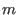
linear
equations, where
is the number of such equations.
, we have a system of 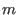
linear
equations, where
is the number of such equations.
For the fields and we can represent two-variable linear equations geometrically as lines on the plane. For example,
represents three lines on the plane. A solution of this system would be all the pairs of numbers
A solution for a system of equations can be obtained algebraically. For instance, suppose the first two
equations in the example above were a system. We would take the first equation 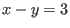
and
transform it into 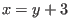
. Now we replace all occurrences of 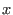
in the second equation
with 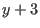
. We would get
 which we could write as 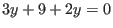
or
which we could write as 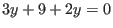
or
 .
We then take this value of
and put it in either of the two equations to get a value
for
. The first equation would give us
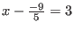
which we could manipulate to
give
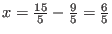
. (Using the second equation will give us
the same answer.) So we know that the two lines intersect
at the point
.
We then take this value of
and put it in either of the two equations to get a value
for
. The first equation would give us
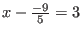
which we could manipulate to
give
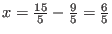
. (Using the second equation will give us
the same answer.) So we know that the two lines intersect
at the point
 .
.
A linear equation in three variables  can be drawn as a plane in three-dimensional space.
We add the
-coordinate to the
and
coordinates. This is easy to visualize. A box has
width (
-axis), height (
-axis) and depth (
-axis). A two-dimensional representation of these three
coordinates is given in Figure 1.12. A solution of a system of linear equations in three
variables can be thought of geometrically as the point or points where all three planes meet. If they don't
have points in common, we don't have a solution. A system of equations that has
no solutions is called inconsistent. If it has one or more solutions then
it is called consistent.
can be drawn as a plane in three-dimensional space.
We add the
-coordinate to the
and
coordinates. This is easy to visualize. A box has
width (
-axis), height (
-axis) and depth (
-axis). A two-dimensional representation of these three
coordinates is given in Figure 1.12. A solution of a system of linear equations in three
variables can be thought of geometrically as the point or points where all three planes meet. If they don't
have points in common, we don't have a solution. A system of equations that has
no solutions is called inconsistent. If it has one or more solutions then
it is called consistent.
Geometry fails us when we deal with more than three variables. In fact it is not uncommon for people to deal with thousands of linear equations in thousands of variables. Linear algebra is used to discover if solutions to these systems exist, if a solution which exists is unique and how to find all the solutions.
is inconsistent. What does this mean geometrically?
(HINT: First find in terms of in the third equation. Then put this into the second equation. Then find in terms of in the transformed second equation. Then put the value of and the value of (both in terms of ) into the first equation. Solve this for . Then use this number to calculate and ).